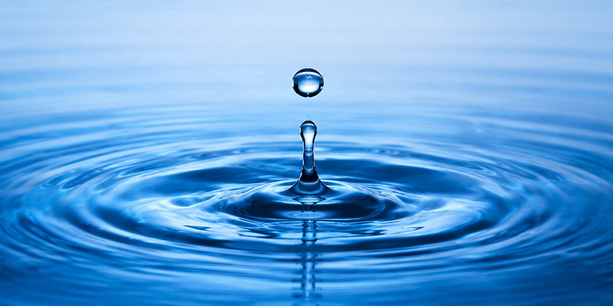
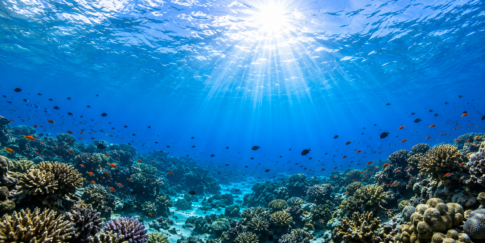

Ползването на водите включва всички дейности, свързани с използването на повърхностни и подземни води за различни цели – питейно-битови, промишлени, селскостопански, енергийни, транспортни, рекреационни и други.
То е от съществено значение за нашето ежедневие, икономиката и опазването на околната среда.

Световният океан покрива повече от 70% от повърхността на Земята и е основен източник на живот и климатично равновесие.
Той регулира температурите на планетата, произвежда голяма част от кислорода и осигурява храна и ресурси за милиони хора.
Замърсяването с пластмаса, нефт и химикали обаче застрашава морските екосистеми и живите организми.
Опазването на Световния океан е важно за бъдещето на природата и човечеството.
